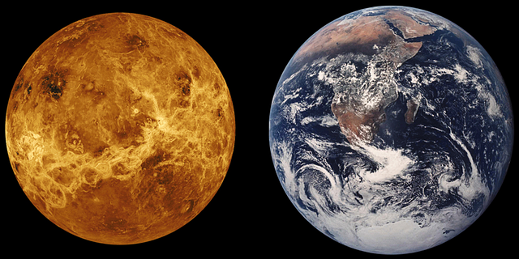

WHY VENUS?
Venus is often referred to as earth's sister because they are similar in size, and at one point,it was in the goldilocks ( habitable) zone. Many scientists believe that venus was once habitable before an unknown event left the planet in hell. This planet's atmosphere is 90x denser than our earth's.
HOW WOULD WE START?
One way of warming up mars surface is by placing a HUGE magnetic shield between our sun and the planet. This shield would act as a barrier as it stops the sun from scrotching the planets astmosphere allowing it to sustain more heat thus making mars habitale. The issue with this method is the cost and the fact that we currently dont have the technology for it right now!
Another way to warm up the planet is by nuking the planets polar caps. Since the expolsion would take place in space, radiation contamaining the water wouldnt be a problem. The problem with this method is that the water released wouldnt last very and would also double the pressure of mars atmosphere. Theres also a bunch of ethical and legal issues with this way as well.